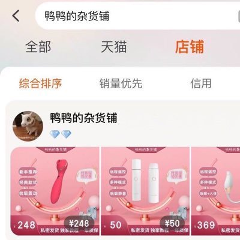

めふき2.0（低潮期）
@lan_shang32900
RT @yayadezahuopu_: 关注➕转发
送寝室神器和秒潮二选一
目前为止声音最低玩具，寝室用也可以
请大家观看视频，买过的中奖了免单
PS:如果我有性骚扰的行为可以拿证据直接锤我，骚扰钱包不算，因为我也要赚点钱养活我自己和我女朋友，谢谢。
我从来没有要求大家录过使…

🍑：鸭鸭的杂货铺（送玩具有优惠）
@yayadezahuopu_
关注➕转发
送寝室神器和秒潮二选一
目前为止声音最低玩具，寝室用也可以
请大家观看视频，买过的中奖了免单
PS:如果我有性骚扰的行为可以拿证据直接锤我，骚扰钱包不算，因为我也要赚点钱养活我自己和我女朋友，谢谢。
我从来没有要求大家录过使用视频。。。。 https://t.co/pcd0ma018G